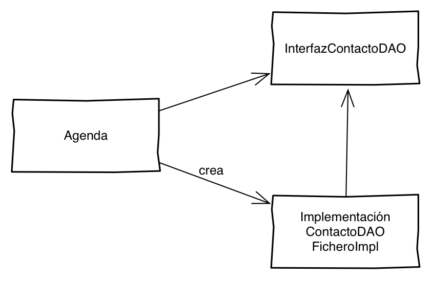

Spring Framework
Ayuda para el desarrollo de aplicaciones y contenedor de inyección de dependencias
Todos los ejemplos que vamos a enseñar son código java.
Todos los conceptos son aplicables a otras tecnologías que usen el paradigma de orientación a objetos.

Relación entre ellos
Ejemplo
Paso 04 - ConfigXmlMain
Ejemplo
Paso 04 - FactoryMain
Ejemplo
Paso 04 - CompositeConfigMain